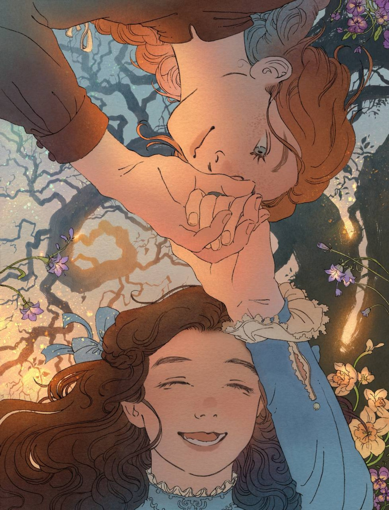
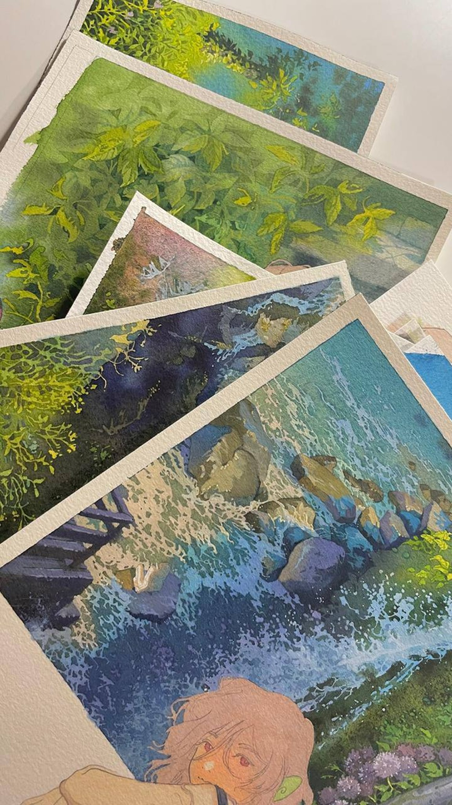
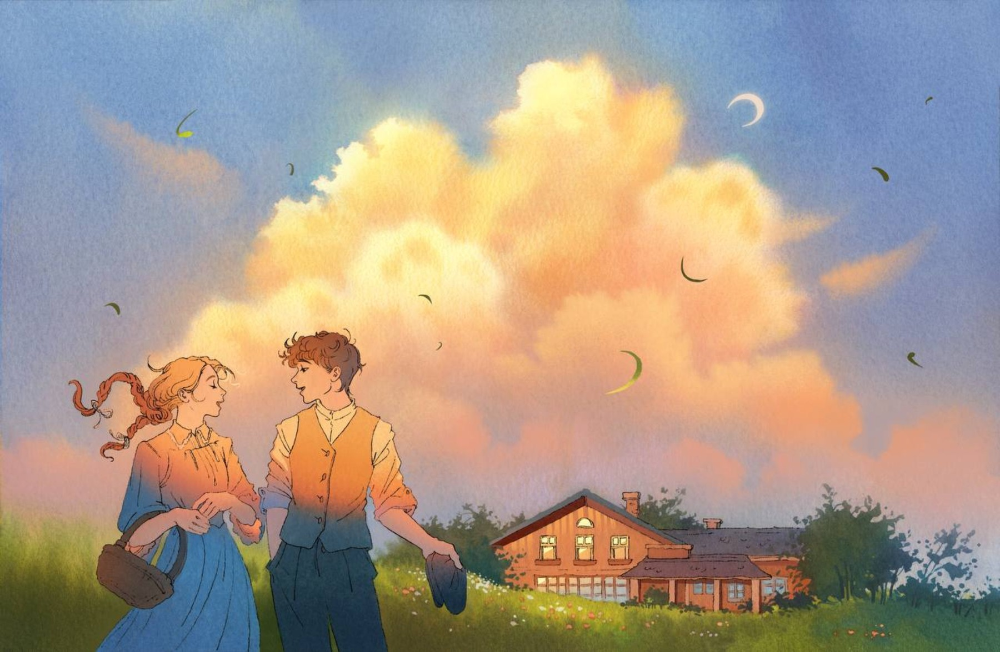
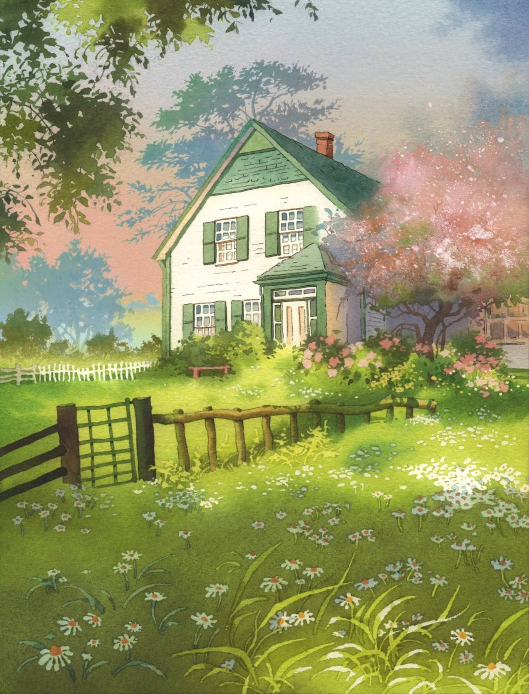
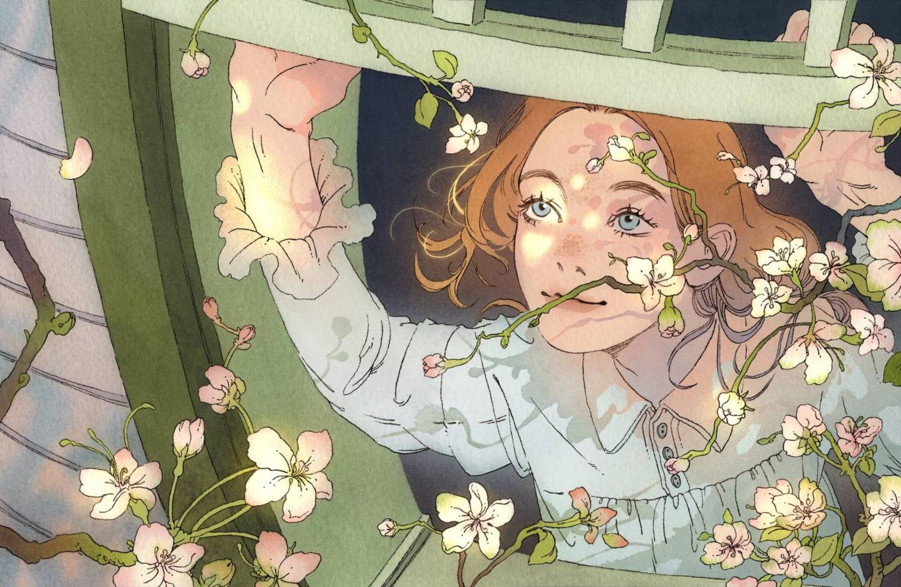
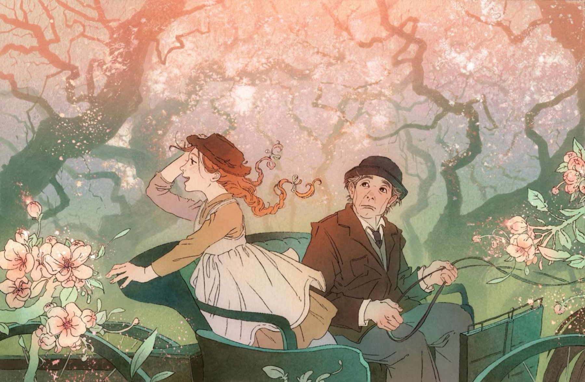

иллюстрация / визуальные истории / печатные серии
Портфолио художницы Винсенты
Тёплая меланхолия, природные сцены, персонажи и мягкая акварельная фактура. Здесь собраны иллюстрации, печатные серии и визуальные истории, в которых важны свет, тишина и чувство места.

обо мне
Нежная палитра,
природные мотивы и сюжетные сцены.

В работах Винсенты соединяются светлая сказочность, память о местах, весенний воздух и человеческая близость. Иллюстрации выглядят мягко, но при этом держат сильный композиционный ритм и узнаваемую палитру.
В этих работах часто встречаются весеннее цветение, дома, лесные тропы, тонкие жесты персонажей и ощущение хрупкого, почти сказочного времени.
галерея
Избранные работы

Свет, воздух и тихие детали делают каждую сцену почти осязаемой.
В центре — настроение места: шелест ветвей, тепло закатного неба, весенний сад и мягкая близость между героями.



мотивы
Что живёт в этих работах
Свет, воздух и тишина
Мягкое небо, прозрачные тени, тёплые блики и ощущение медленного дыхания пространства.
Память о местах
Дома, сады, тропы, берега и лесные сцены, которые выглядят как воспоминание или сон.
Хрупкая близость
Персонажи, жесты и взгляды, через которые появляется чувство нежности, сказочности и внутреннего тепла.
контакты
Открыта к коллаборациям, сериям и визуальным проектам.
Для сотрудничества, заказов и предложений по иллюстрациям, печатным сериям и визуальным историям можно написать в Telegram или Instagram.